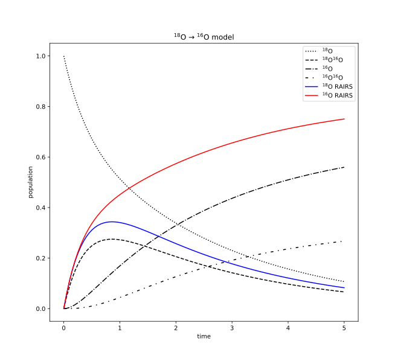

2022.12.01 — simple model for 18O → 16O substitution
consider an $\oxya$-precovered surface with an influx of $\waterb$.
a simple model to describe the rise and decay of the $\oha$ RAIRS signal consists of the following processes:
the reaction of an impinging $\waterb$ with a surface $\oxya$ to produce a pair $\paira$ on the surface.
the "disproportionation" of $\paira$ surface pair, which leads to either:
the desorption of a $\waterb$ molecule and a surface $\oxya$ atom, or
the desorption of a $\watera$ molecule and a surface $\oxyb$ atom.
the reaction of an impinging $\waterb$ with a surface $\oxyb$ to produce a pair $\pairb$ on the surface.
the disproportionation of a $\pairb$ surface pair, leading to the desorption of a $\waterb$ molecule and a surface $\oxyb$ atom.
Assigning $k$ as the disproportionation reaction rate constant, and $f$ for the $\waterb$ flux, we obtain the following set of differential equations governing the reaction dynamics:
\begin{align}
& \frac{d}{dt}\conc{\oxya} & = & -f\conc{\oxya} & & +\frac{k}{2} \conc{\paira} & \\
& \frac{d}{dt}\conc{\oxyb} & = & & -f\conc{\oxyb} & +\frac{k}{2} \conc{\paira} & +k\conc{\pairb} \\
& \frac{d}{dt}\conc{\paira} & = & +f\conc{\oxya} & & -k \conc{\paira} & \\
& \frac{d}{dt}\conc{\pairb} & = & & +f\conc{\oxyb} & & -k\conc{\pairb} \\
\end{align}
or, in matrix form:
\begin{equation}
\frac{d}{dt}
\underbrace{
\begin{bmatrix}
\conc{\oxya} \\ \conc{\oxyb} \\ \conc{\paira} \\ \conc{\pairb}
\end{bmatrix}
}_{\bm{c}}
=
\underbrace{
\begin{bmatrix}
-f & & +\frac{k}{2} & \\
& -f & +\frac{k}{2} & +k \\
+f & & -k & \\
& +f & & -k \\
\end{bmatrix}
}_{M}
\begin{bmatrix}
\conc{\oxya} \\ \conc{\oxyb} \\ \conc{\paira} \\ \conc{\pairb}
\end{bmatrix}
\end{equation}
or, symbolically:
\begin{equation}
\dot{\bm{c}} = M \bm{c}
\end{equation}
given some initial surface coverage condition $\bm{c_o} = (c_1^o,c_2^o,c_3^o,c_4^o)$ and a time $t_o$, the coverages $c'_i$ at a later time $t' = t_o + T$ are given by:
\begin{equation}
c'_i = \sum_{j,k=1}^4 S_{ij}e^{\lambda_j T}S^{-1}_{jk}c^o_k
\end{equation}
where $S_{ij}$ and $\lambda_i$ is the eigenvector decomposition of $M$ in the following sense:
\begin{equation}
\sum_{k=1}^4 M_{ik} S_{kj} = S_{ij} \lambda_j
\end{equation}
for $i,j = 1,2,3,4$.
as an example, I plot below the time evolution of the surface coverages assuming $f=1$ and $k=2$ and initial surface coverages of $c_1^o = \conc{\oxya}(t=t_o) = 1$, $c_2^o=c_3^o=c_4^o=0$:

above: model predictions for a surface with an initial precoverage of $\oxya$.
in addition to the coverages, we plot also the expected RAIRS signal for the $\oha$ (blue) and $\ohb$ (red) stretches.
the $\oha$ RAIRS signal is presumed to be proportional to $\conc{\paira}$,
while the $\ohb$ RAIRS signal is presumed to be proportional to $\conc{\paira} + 2 \conc{\pairb}$.
the python code used to calculate and plot these results can be found at here.
the code can easily be adapted to investigate the model for arbitrary values of $k$ and $f$.